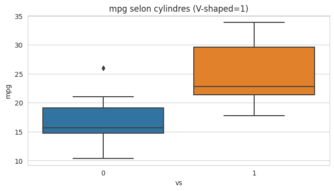
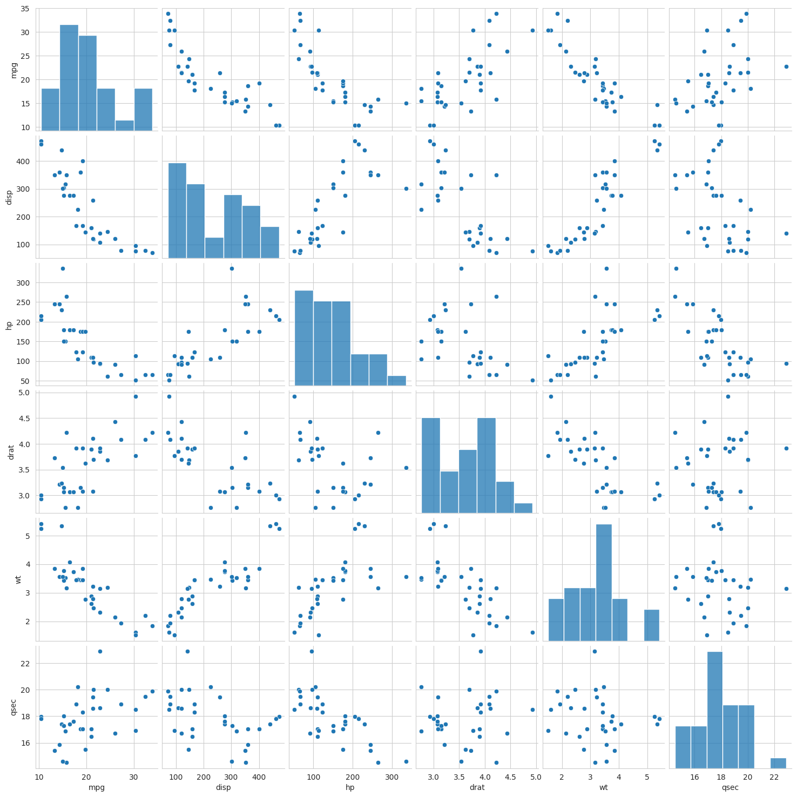
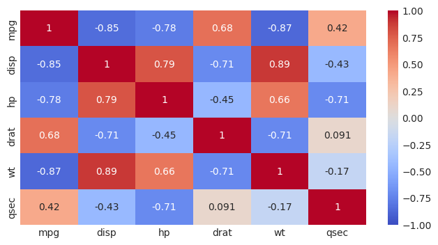
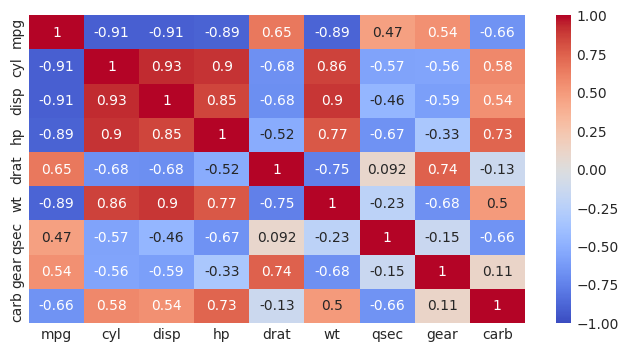

Solution: Les statistiques multivariées avec Pandas#
On utilise le dataset mtcars qui comprend 32 observations sur 11 variables :
mpg Miles/(US) gallon
cyl Number of cylinders
disp Displacement (cu.in.)
hp Gross horsepower
drat Rear axle ratio
wt Weight (1000 lbs)
qsec 1/4 mile time
vs Engine (0 = V-shaped, 1 = straight)
am Transmission (0 = automatic, 1 = manual)
gear Number of forward gears
carb Number of carburators
import warnings
warnings.simplefilter(action='ignore', category=FutureWarning)
import pandas as pd
import matplotlib.pyplot as plt
import seaborn as sns
%matplotlib inline
from matplotlib import rcParams
rcParams['figure.figsize'] = 8, 4
sns.set_style('whitegrid')
cars = pd.read_csv("../../data/mtcars.csv")
cars
| model | mpg | cyl | disp | hp | drat | wt | qsec | vs | am | gear | carb | |
|---|---|---|---|---|---|---|---|---|---|---|---|---|
| 0 | Mazda RX4 | 21.0 | 6 | 160.0 | 110 | 3.90 | 2.620 | 16.46 | 0 | 1 | 4 | 4 |
| 1 | Mazda RX4 Wag | 21.0 | 6 | 160.0 | 110 | 3.90 | 2.875 | 17.02 | 0 | 1 | 4 | 4 |
| 2 | Datsun 710 | 22.8 | 4 | 108.0 | 93 | 3.85 | 2.320 | 18.61 | 1 | 1 | 4 | 1 |
| 3 | Hornet 4 Drive | 21.4 | 6 | 258.0 | 110 | 3.08 | 3.215 | 19.44 | 1 | 0 | 3 | 1 |
| 4 | Hornet Sportabout | 18.7 | 8 | 360.0 | 175 | 3.15 | 3.440 | 17.02 | 0 | 0 | 3 | 2 |
| 5 | Valiant | 18.1 | 6 | 225.0 | 105 | 2.76 | 3.460 | 20.22 | 1 | 0 | 3 | 1 |
| 6 | Duster 360 | 14.3 | 8 | 360.0 | 245 | 3.21 | 3.570 | 15.84 | 0 | 0 | 3 | 4 |
| 7 | Merc 240D | 24.4 | 4 | 146.7 | 62 | 3.69 | 3.190 | 20.00 | 1 | 0 | 4 | 2 |
| 8 | Merc 230 | 22.8 | 4 | 140.8 | 95 | 3.92 | 3.150 | 22.90 | 1 | 0 | 4 | 2 |
| 9 | Merc 280 | 19.2 | 6 | 167.6 | 123 | 3.92 | 3.440 | 18.30 | 1 | 0 | 4 | 4 |
| 10 | Merc 280C | 17.8 | 6 | 167.6 | 123 | 3.92 | 3.440 | 18.90 | 1 | 0 | 4 | 4 |
| 11 | Merc 450SE | 16.4 | 8 | 275.8 | 180 | 3.07 | 4.070 | 17.40 | 0 | 0 | 3 | 3 |
| 12 | Merc 450SL | 17.3 | 8 | 275.8 | 180 | 3.07 | 3.730 | 17.60 | 0 | 0 | 3 | 3 |
| 13 | Merc 450SLC | 15.2 | 8 | 275.8 | 180 | 3.07 | 3.780 | 18.00 | 0 | 0 | 3 | 3 |
| 14 | Cadillac Fleetwood | 10.4 | 8 | 472.0 | 205 | 2.93 | 5.250 | 17.98 | 0 | 0 | 3 | 4 |
| 15 | Lincoln Continental | 10.4 | 8 | 460.0 | 215 | 3.00 | 5.424 | 17.82 | 0 | 0 | 3 | 4 |
| 16 | Chrysler Imperial | 14.7 | 8 | 440.0 | 230 | 3.23 | 5.345 | 17.42 | 0 | 0 | 3 | 4 |
| 17 | Fiat 128 | 32.4 | 4 | 78.7 | 66 | 4.08 | 2.200 | 19.47 | 1 | 1 | 4 | 1 |
| 18 | Honda Civic | 30.4 | 4 | 75.7 | 52 | 4.93 | 1.615 | 18.52 | 1 | 1 | 4 | 2 |
| 19 | Toyota Corolla | 33.9 | 4 | 71.1 | 65 | 4.22 | 1.835 | 19.90 | 1 | 1 | 4 | 1 |
| 20 | Toyota Corona | 21.5 | 4 | 120.1 | 97 | 3.70 | 2.465 | 20.01 | 1 | 0 | 3 | 1 |
| 21 | Dodge Challenger | 15.5 | 8 | 318.0 | 150 | 2.76 | 3.520 | 16.87 | 0 | 0 | 3 | 2 |
| 22 | AMC Javelin | 15.2 | 8 | 304.0 | 150 | 3.15 | 3.435 | 17.30 | 0 | 0 | 3 | 2 |
| 23 | Camaro Z28 | 13.3 | 8 | 350.0 | 245 | 3.73 | 3.840 | 15.41 | 0 | 0 | 3 | 4 |
| 24 | Pontiac Firebird | 19.2 | 8 | 400.0 | 175 | 3.08 | 3.845 | 17.05 | 0 | 0 | 3 | 2 |
| 25 | Fiat X1-9 | 27.3 | 4 | 79.0 | 66 | 4.08 | 1.935 | 18.90 | 1 | 1 | 4 | 1 |
| 26 | Porsche 914-2 | 26.0 | 4 | 120.3 | 91 | 4.43 | 2.140 | 16.70 | 0 | 1 | 5 | 2 |
| 27 | Lotus Europa | 30.4 | 4 | 95.1 | 113 | 3.77 | 1.513 | 16.90 | 1 | 1 | 5 | 2 |
| 28 | Ford Pantera L | 15.8 | 8 | 351.0 | 264 | 4.22 | 3.170 | 14.50 | 0 | 1 | 5 | 4 |
| 29 | Ferrari Dino | 19.7 | 6 | 145.0 | 175 | 3.62 | 2.770 | 15.50 | 0 | 1 | 5 | 6 |
| 30 | Maserati Bora | 15.0 | 8 | 301.0 | 335 | 3.54 | 3.570 | 14.60 | 0 | 1 | 5 | 8 |
| 31 | Volvo 142E | 21.4 | 4 | 121.0 | 109 | 4.11 | 2.780 | 18.60 | 1 | 1 | 4 | 2 |
Relation entre variables qualitatives et variables numériques#
# TODO: Representer la consommation y=mpg en fonction de la disposition des cylindres x=vs
ax = sns.boxplot(data=cars, x="vs", y="mpg")
ax.set_title("mpg selon cylindres (V-shaped=1)");

Recherche de corrélations entre variables#
Un coefficient de corrélation est une valeur numérique calculée à partir de deux séries de valeurs dont on souhaite évaluer la corrélation. Il calcule dans quelle mesure deux variables tendent à changer ensemble.
Il peut être intéressant d’avoir des variables:
corrélées avec la variable cible (target)
peu corrélées entre elles, ce qui pourrait signifier de la redondance et qui peut être problématique pour certains algorithmes
On peut avoir une intuition de cette correlation dans une représentation d’une variable par rapport à une autre (scatterplot).
La fonction pairplot de seaborn permet d’obtenir une vue synthétique de ces représentations
En abscisse et en ordonnée : les variables du dataframe
A l’intersection : le nuage de points (scatterplot) correspondant
Histogramme sur la diagonale
Attention aux temps de calcul !
# Sélectionner les variables numériques continues de cars
cars_num_cont = cars.drop(columns=['model', 'cyl', 'vs', 'am', 'gear', 'carb'])
# Afficher des nuages de points entre paires de variables continues
sns.pairplot(cars_num_cont);

Coefficient de corrélation de Pearson (correlation linéaire)#
voir la documentation
# TODO: Calculer le coefficient de Pearson des variables du DataFrame cars (cars.corr(...))
corr_pearson = cars_num_cont.corr(method="pearson", numeric_only=True)
corr_pearson
| mpg | disp | hp | drat | wt | qsec | |
|---|---|---|---|---|---|---|
| mpg | 1.000000 | -0.847551 | -0.776168 | 0.681172 | -0.867659 | 0.418684 |
| disp | -0.847551 | 1.000000 | 0.790949 | -0.710214 | 0.887980 | -0.433698 |
| hp | -0.776168 | 0.790949 | 1.000000 | -0.448759 | 0.658748 | -0.708223 |
| drat | 0.681172 | -0.710214 | -0.448759 | 1.000000 | -0.712441 | 0.091205 |
| wt | -0.867659 | 0.887980 | 0.658748 | -0.712441 | 1.000000 | -0.174716 |
| qsec | 0.418684 | -0.433698 | -0.708223 | 0.091205 | -0.174716 | 1.000000 |
# TODO: Visualiser la matrice de corrélation de Pearson avec seaborn (sns.heatmap)
sns.heatmap(corr_pearson, vmin=-1, vmax=1, annot=True, cmap="coolwarm")
<AxesSubplot: >

Corrélation de Spearman#
Dans le cas de Spearman, nous ne nous limitons plus à une relation linéaire entre deux variables, par contre la relation doit être monotone (strictement croissante ou décroissante).
Dans une relation monotone, les variables ont tendance à changer ensemble, mais pas forcément à une vitesse constante.
Spearman s’applique entre deux variables continues ou ordinales.
Le coefficient a une valeur comprise entre [-1,1].
Calculer la matrice de correlation de Spearman avec Pandas#
# TODO: Sélectionner toutes les variables numériques de cars
cars_num = cars.drop(columns=['model', 'vs', 'am'])
# TODO: Calculez la matrice de corrélation des variables du dataframe cars
corr_spearman = cars_num.corr(method='spearman', numeric_only=True)
corr_spearman
| mpg | cyl | disp | hp | drat | wt | qsec | gear | carb | |
|---|---|---|---|---|---|---|---|---|---|
| mpg | 1.000000 | -0.910801 | -0.908882 | -0.894665 | 0.651455 | -0.886422 | 0.466936 | 0.542782 | -0.657498 |
| cyl | -0.910801 | 1.000000 | 0.927652 | 0.901791 | -0.678881 | 0.857728 | -0.572351 | -0.564310 | 0.580068 |
| disp | -0.908882 | 0.927652 | 1.000000 | 0.851043 | -0.683592 | 0.897706 | -0.459782 | -0.594470 | 0.539778 |
| hp | -0.894665 | 0.901791 | 0.851043 | 1.000000 | -0.520125 | 0.774677 | -0.666606 | -0.331402 | 0.733379 |
| drat | 0.651455 | -0.678881 | -0.683592 | -0.520125 | 1.000000 | -0.750390 | 0.091869 | 0.744816 | -0.125223 |
| wt | -0.886422 | 0.857728 | 0.897706 | 0.774677 | -0.750390 | 1.000000 | -0.225401 | -0.676128 | 0.499812 |
| qsec | 0.466936 | -0.572351 | -0.459782 | -0.666606 | 0.091869 | -0.225401 | 1.000000 | -0.148200 | -0.658718 |
| gear | 0.542782 | -0.564310 | -0.594470 | -0.331402 | 0.744816 | -0.676128 | -0.148200 | 1.000000 | 0.114887 |
| carb | -0.657498 | 0.580068 | 0.539778 | 0.733379 | -0.125223 | 0.499812 | -0.658718 | 0.114887 | 1.000000 |
# TODO: Visualiser la matrice de corrélation de Spearman avec seaborn (sns.heatmap)
sns.heatmap(corr_spearman, vmin=-1, vmax=1, annot=True, cmap="coolwarm");
